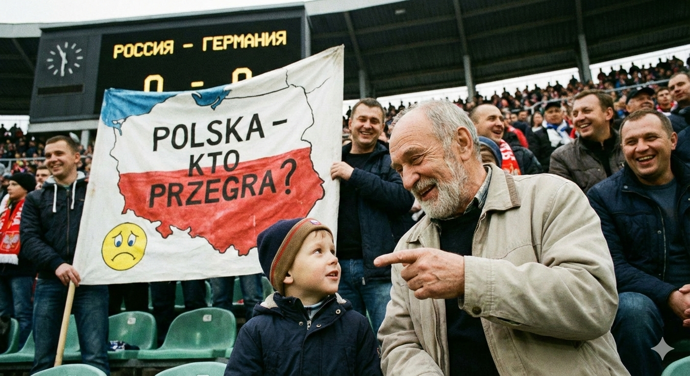
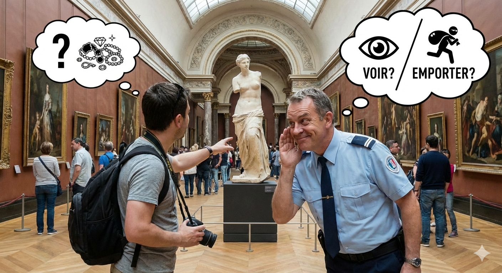

САМЫЙ КРУТОЙ САЙТ ВО ВСЕМ ИНТЕРНЕТЕ С САМЫМИ (НЕ) СМЕШНЫМИ АНЕКДОТАМИ!!!
Анекдоты для хорошего настроения и атмосферы
Куда же без политических анекдотов
Пришёл я как-то я с внуком на футбол Россия против Германии.
Внук спрашивает:
— Дед, как ты думаешь, кто проиграет?
— Польша.

Аж кушать захотелось
— Мам смотри голуби, у нас хлеб остался?
— Без хлеба ешь
Уже не так актуально, но why not
Посетитель Лувра спрашивает у смотрителя:
— Скажите, что в вашем музее самое ценное?
— Вам посмотреть или вынести?

Описание видосика
Ссылка https://www.youtube.com/watch?v=4T-BEoElp_I В данном видео Алексей Столяров рассказывает про два города Ингушетии: Назрань и Магас.
В них относительно низкие цены на продукцию, особенно если сравнивать с Москвой и особенно если сравнивать в плане стоимости жилья.
Например, квартира с ремонтом в центре Назрани стоит 8.5 миллионов рублей, такая квартира в Москве обошлась бы дороже раз в 10.
Также в этом регионе живут достаточно религиозные люди, поэтому там запрещена продажа алкоголя, но местные молодые люди компенсируют его нехватку, как сказал один из прохожих "прихотропными веществами",т.е. "котиками".
Да и в общем парни там "газующие" и "шебутные".
К тому же менталитет местных жителей таков, что они достойно относятся к семейным ценностям, главный герой видео рассказывал о прошлом своих предков вплоть до 15 века.
Ландшафты города также восхищают, повсюду горы, а кто их не любит?
Отзыв
Мне было интересно послушать про жизнь в других городах, особенно из видео с таким интересным заголовком.
Но всё же Столяров немного злил, называя Ингушетию раем и закрывая глаза на её проблемы — очень похоже было на рекламу этой республики.
Были противоречия в том, что он нахваливал этот регион, а минутой позже рассказывал, как сложно всё-таки здесь жить. Как-то вовсе сказал местному жителю, мол, у вас всё очень дёшево, а тот ему ответил: «Так понятно, по московским-то меркам».
В этом и дело, не почувствовала эмпатии с его стороны.
Тем не менее, видео получилось интересным.
Цитатки
— Не живешь, а выживаешь, по факту.— Девушка может быть и не покрытой?
— Степень открытости зависит от степени религиозности семьи.
— Если она открытая, значит, семья не очень религиозная?
— Возможно. Но будем надеяться, что по воле Всевышнего они к этому придут. Лучшая конфета — та, которая в обёртке, она вкуснее...— Тут по 70 рублей, слышишь?
— Нет, 60!
— Вот так цена меняется, видите? Быстро!— Вы все друг друга знаете, да?
— Да-да, все братья!
— А сколько у вас братьев?
— У меня шесть братьев.
— А этот?
— Этот тоже... двоюродный. На дороге
— Вы блогер? Да, брат?
— Да, брат.
— Можешь снять вот эти две машины?
— Без проблем, брат.
— Ты кто?
— Алексей Столяров.
— Всё-ё-ё...
— Брат, а где номера?
— Нету, брат, нету.
Диалог с другим парнем:
— А как они без всего тут ездят?
— Всё возможно, брат, всё возможно.